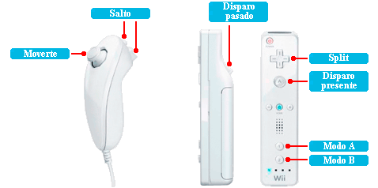
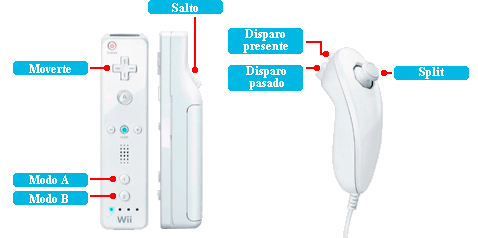
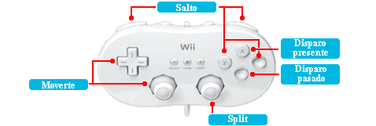
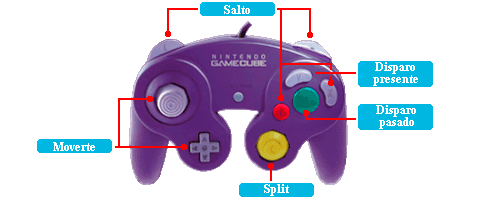

9 |
Controles |
 |
En esta modalidad, usaremos el Nunchuk para saltar y mover nuestro héroe. El mando de Wii servirá para disparar y usar el poder SPLIT(Separar). Además, con el Botón 1 y 2 cambiaremos entre el Modo de Control A y B respectivamente.

Con este modo el mando de Wii servirá para saltar y mover nuestro héroe, así como cambiar de Modo de Control. Con el Nunchuk podremos disparar y usar el poder SPLIT(Separar).

Conecta el mando clásico al mando de Wii para disfrutar de esta modalidad de control.

Conecta un mando de Nintendo GameCube al puerto del mando 1. Para activarlo pulsa el botón A.
 |
|
 |
 |
 |